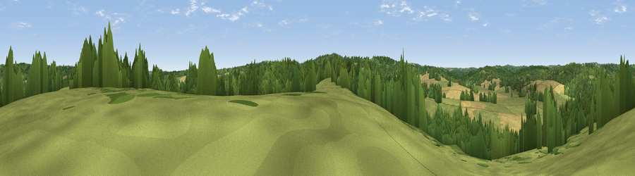

Viewpoint near Burwash Common
#40228 in England · top 55% of its area beats it · near Burwash Common · access?Where it is
The exact computed spot (TQ 64475 25875). Click the marker for map links.
Public access: no public right of way or access land is recorded at this exact spot — it may be on private land. Computed from Natural England's CRoW access layer and OpenStreetMap rights of way — not the legal definitive map. Always verify locally.
The view, rendered

A 360° render of this exact spot computed from the terrain model, tree cover and land cover — summer colours, afternoon light, calibrated against photographs of famous viewpoints. Real trees, hedges and buildings will differ in detail.
The panorama
Grey silhouette: terrain skyline in each direction (720 bearings, Earth curvature and refraction included). Dashed green: skyline with trees (+15 m) and buildings (+8 m) as obstacles. Blue strip: how far the ground is visible on each bearing.
Where the view opens
Wedge length = distance to the farthest visible ground on that bearing (vegetation-aware). Rings at 10, 25 and 50 km.
What fills the view
48% grassland · 36% woodland · 16% cropland
Angular shares of the visible panorama (visual magnitude), not map area. Landscape diversity 0.45 (0–1 Shannon).
Key numbers
More beautiful places nearby
The staircase of upgrades: each row has a higher view potential than everything closer. Driving times are estimates from straight-line distance, calibrated against real road routing — check an actual route before setting out.
| Place | Direction | Drive | Score |
|---|---|---|---|
| Viewpoint near Burwash Common | S · 3 km | ~7 min | 52.1 |
| Brightling Obelisk [Brightling Down] | SSE · 5 km | ~12 min | 69.1 |
| Viewpoint near Three Oaks | SE · 22 km | ~37 min | 69.3 |
| Viewpoint near Wilmington | SSW · 24 km | ~40 min | 81.8 |
| Wilmington Hill | SSW · 25 km | ~40 min | 85.4 |
| Viewpoint near Alciston | SW · 25 km | ~41 min | 86.8 |
| Firle Beacon | SW · 25 km | ~41 min | 88.9 |
| Viewpoint near Niton | WSW · 125 km | ~149 min | 89.2 |
51.00875, 0.34310 · source: screening · position refined by local search. Computed location — check access rights before visiting.